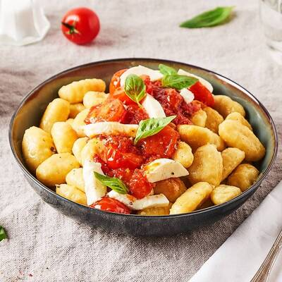

-
Quiche courgettes chèvre
Ingrédients
- 1 pâte brisée
- 1 courgette
- 2 pincées d'herbes de Provence
- 3 oeufs
- 15cl de crème liquide (30%)
- 1 pincée de sel et poivre
- 1/2 bûche de chèvre
- 100g de gruyère râpé
Préparation
- - Pour la pâte, rendez-vous sur la page les bases culinaires !
- - Disposer la pâte dans un moule à tarte
- - Piquer le fond avec une fourchette
- - Laver la courgette et la couper en rondelles fines
- - Faire chauffer de l'huile d'olive dans une poêle
- - Ajouter la courgette, les herbes de Provence, le sel et le poivre
- - Faire revenir à feu moyen pendant 8 minutes en remuant régulièrement
- - Casser les oeufs dans un saladier
- - Ajouter la crème, du sel et du poivre puis mélanger
- - Couper le chèvre en petits morceaux puis l'ajouter
- - Verser le mélange dans le fond de tarte puis rajouter les courgettes
- - Parsemer de gruyère râpé
- - Faire cuire à 200°C pendant 30 minutes minimum
-
Pizza

Ingrédients
- 1 pâte à pizza maison
- Sauce provençale ou crème fraîche
- Jambon cru ou jambon blanc
- Chèvre ou mozzarella
- Gruyère râpé
Préparation
- - Pour la pâte, rendez-vous sur la page les bases culinaires !
- - Préchauffer le four à 200°C
- - Fariner le plan de travail et étaler la pâte dessus
- - Étaler la sauce ou la crème sur la pâte
- - Mettre le chèvre (et/ou la mozzarella)
- - Disposer le jambon puis le gruyère
- - Replier les bords sur eux même pour faire les croûtes
- - Faire cuire la pizza 15 à 20 minutes selon votre préférence
-
Gnocchis di patate
Ingrédients pour 4 personnes
- 1kg de pommes de terre rouges
- 1 oeuf
- 300g de farine
- 2 pincées de sel
Préparation
- - Faire cuire les pommes de terre dans l'eau bouillante pendant 40 minutes
- - Mettre la farine sur le plan de travail et faire un puits
- - Presser les pommes de terre encore chaudes au centre du puits
- - Ajouter l'oeuf battu
- - Mélanger à la main jusqu'à obtenir une pâte molle et compacte sans trop la pétrir
- - Couper un morceau de pâte et le rouler pour en faire un long boudin de quelques centimètres de diamètre
- - Couper des petits morceaux d'environ 2cm d'épaisseur
- - Façonner les gnocchis avec la planche à gnocchis ou une fourchette (en appuyant légèrement avec le pouce, faire glisser le gnocchi)
- - Déposer les gnocchis sur une planche en les espaçant
Cuisson
- - Faire bouillir de l'eau dans une casserole
- - Mettre les gnocchis dans l'eau bouillante et dès qu'ils remontent, ils sont cuits !
- - Faire griller les gnocchis dans une poêle avec un peu d'huile d'olive
-
Onigiris
Ingrédients pour 6-8 onigiri
- Riz japonais (quantité à déterminer)
- Feuilles d'algue nori
- Garniture (thon, crevettes ou saumon)
Préparation
- - Pour la cuisson du riz, rendez-vous sur la page les bases culinaires !
- - Afin de pouvoir modeler le riz, il faut s'humidifier les mains dans un mélange de vinaigre de riz (légèrement) et d'eau
- - Prendre une petite quantité de riz et commencer à former une boule
- - Insérer la garniture au centre
- - Façonner l'onigiri en sorte de triangle
- - Couper un rectangle de feuille de nori
-
Crocchette di patate
Ingrédients pour environ 10 portions
- 1kg de pommes de terre rouges
- 100g de Grana Padano ou Parmesan
- 1 pincée de sel et de poivre
- Emmental ou un fromage fondant de votre choix
- 1 pincée de noix de muscade
- 2 jaunes d'oeuf
Ingrédients pour la chapelure et la cuisson
- 2 oeufs
- Chapelure
- Herbes de Provence
- Huile de friture (type Isio 4)
Préparation
- - Faire cuire les pommes de terre dans l'eau bouillante pendant 40 minutes
- - Mettre la chapelure et les herbes de Provence dans un plat
- - Couper le fromage en petits bâtonnets
- - Presser les pommes de terre encore chaudes
- - Ajouter le Grana Padano ou Parmesan, les jaunes d'oeuf, le sel et la muscade puis mélanger
- - Prendre une petite portion de pâte et l'applatir grossièrement à la main
- - Placer un morceau de fromage au centre
- - Refermer le tout en formant une croquette
- - Bien refermer pour que l'huile ne rentre pas pendant la cuisson
- - Battre les 2 oeufs dans un bol
- - Tremper les croquette dedans puis les paner
- - Faire chauffer l'huile dans une poêle jusqu'à 170°C
- - Faire cuire 3 croquettes à la fois
- - Une fois cuites, bien les égoutter
- - Mettre les croquettes dans une assiette recouverte d'essui-tout